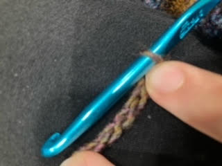
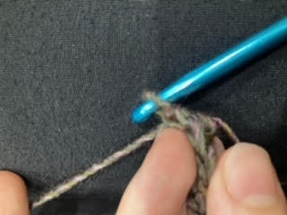

Crocheting is one of my favorite hobbies! Here are a few reasons why:
Here's a quick crochet tutorial. This will show you everything you need to make a blanket or a scarf!
Tie a slipknot in the yarn.
Put your crochet hook through the loop.
Grab the yarn with the hook.
Pull the yarn through the loop.
Now, you have a new loop on the hook! What you just did is called chaining. Continue pulling yarn through the loops.
As you keep chaining, you will begin to make a long chain (as the name suggests). Make this chain as long as you want. If you want to make a scarf or blanket, make the chain as long as the desired width of your scarf/blanket.
Once your chain is as long as you want it, flip it over. This side should look something like an actual metal chain. Note the small bumps facing towards you.
Insert your hook in the second bump from your hook. You should now have two loops on your hook.
Grab the yarn...
And pull through the first loop, leaving two loops on your hook (one being the new loop you just made).
Grab the yarn again...
And pull through both loops, leaving one loop on your hook. What we just did is called a single crochet! This is the basic stitch of crochet, and will be even easier in later rows.
Put a single crochet in every bump on your chain.
Now, flip your work over.
Look at the first teardrop-shaped loop.
Insert your hook under the teardrop. You should now have three loops on your hook.
Grab the yarn...
And pull through both loops of the teardrop, leaving two loops on your hook.
Grab the yarn...
And pull through both loops, leaving one on your hook. (This is another single crochet!)
Congratulations! You now know everything you need to crochet a scarf, blanket, coaster, or any other rectangular shape!
If you mess up, don't worry. Crochet is easy to learn, but takes a minute to master. Trust me, you will get there!
Also, here's a crochet tutorial video from Kristin's Crochet Tutorials!
If you make something using these instructions, it will be a thick but stretchy fabric.
If you learn a few more advanced techniques (literally just wrapping the yarn around the hook, it's not as hard as it seems!) you can make patterns!
This is a striped pattern using rows of alternating size stitches.
This is a diamond/DNA pattern using alternate size stitches in the same row.
Enjoy! I hope I can inspire you to start crocheting. It's been a very productive and fun hobby for me.